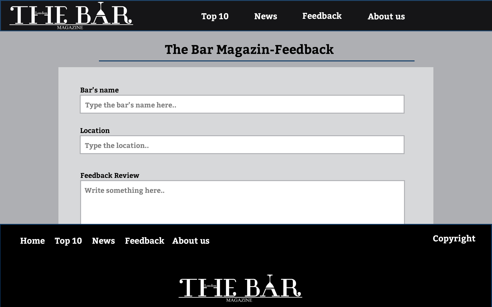

The bar is a website dedicated to promoting the rich culture of pubs and drinking in London. An integral part of British life pubs are a good way to socialize relax and have a drink which does not necessarily have to be alcoholic after a long day at work. The type of structure I chose to implement in my site was a minimalistic approach where the main colours are a black and white with a mix of grey, this monochrome look is reminiscent of a bartender’s uniform of a white shirt and black apron. One of the main things that inspired me when creating this website was my love of pub culture and the way they can bring together people regardless of age, race or social status. Also of course is the multitude of ways alcoholic beverages can be mixed and prepared, which is evident in my website which features a bartenders competition. One way my site is accessible is the highly contrasted navigation and footer which features links to the main pages of the website such as “News”, “Feedback”, “About us” etc. Also is the way that links will change appearance when hovered over by the mouse which indicates to the user that it is interactive.
I watched videos about responsive websites and after then I started structure my website. At the beginning it was very confusing but as I was doing I feel like I have improved a lot. I had to check a few thing on the internet for example how to make a slideshow or how to make a form. I used W3 schools most of the time if I needed something. Also I had to look for how to make a responsive navigation menu. I have not copied the codes. I tried to understood them and then implement in my html or javascript.
I think the minimalistic approach to the website combined with the complexity worked well as it shows the information clearly and concisely to the user. Another way the website has worked well is the way the images are displayed, with some images being greyed out slightly and coming back to life in colour when hovered over by a mouse.
One way I would do things differently next time is to add comments while I constructed the code, as along the way I found it hard to edit my code or to debug. Also I would have liked to add a timer for my slideshow on the main page so the user would not have to manually click to view pictures.
I used pictures from google, but I designed the logo and the icon for the website.
